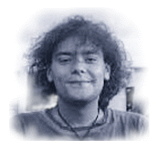
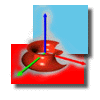

|
 Carlos Calzada Sobre el Autor: Soy estudiante de informática (de momento) y desde que tenía un Spectrum me han gustado los gráficos por ordenador, también soy muy aficionado a Linux y a todo lo que no tiene que ver con Micro$oft. Los bonsáis y los acuarios son dos de mis aficiones no relacionadas con los ordenadores. Índice de contenidos: Introducción Posicionamiento básico de la cámara Motion blur Depth of field |
Posicionamiento Básico de la CámaraResumen: En este segundo artículo sobre RenderMan nos meteremos en la configuración y posicionamiento de la cámara y veremos los efectos que es capaz de crear. Veremos que, aunque el posicionamiento no es tan intuitivo como en Pov-Ray, tiene la ventaja de que es muy fácil programar trayectorias. Esto lo veremos en el siguiente artículo. IntroducciónEn esta segunda entrega veremos con detalle el modelo de cámara de RenderMan. La cámara es uno de los elementos más importantes de un renderizador y con ella se pueden crear los efectos más interesantes como el Motion Blur (¿qué es lo que se ve cuando fotografiamos algo que va muy deprisa?) y el Depth of Field (enfoque y desenfoque). Aunque se podrían haber modelado muchos más efectos como por ejemplo el Lens Flare (el brillo de las luces cuando las fotografiamos), muchos de ellos se consiguen, no modificando el modelo de la cámara (haciéndolo más complejo), sino que se modelan como propiedades de los objetos gracias al avanzado sistema de shaders (shaders entendido como texturas de los objetos) que posee, con el cual podemos crear nuestros propios "sombreadores" y crear efectos bastante impresionantes. El modo en que se programan y compilan estos sombreadores lo veremos en otro artículo, aunque este tema es bastante amplio (muy, muy amplio y además no tengo ni idea y lo tendré que mirar bien). Como explicábamos en el artículo anterior, para renderizar las imágenes debemos poner: rendrib fichero.ribsalida a fichero rendrib -d fichero.ribsalida por pantalla. Posicionamiento básico de la cámaraEl sistema de coordenadas de la cámara es "left-handed" y coincide con la superficie del monitor. El origen se sitúa en el centro de la pantalla con el eje x hacia la derecha, el y hacia arriba y el z hacia "dentro". Por defecto, el "sistema de coordenadas actual" coincide con el "sistema de coordenadas de la cámara" tal y como se ve en la primera figura (el eje x es rojo, el y verde y el z azul). La primera imagen es una vista "aérea" de como va a quedar la escena y la segunda es la escena propiamente dicha (las luces no están en el mismo sitio en las dos imágenes para que se vean bien). Aunque la escena no sea especialmente compleja (la verdad es que es bastante horrible) nos servirá para comprender los ficheros RIB de ejemplo sin que nos estorben complicados modelos geométricos. 
¡La cámara se ha movido hacia delante! En realidad lo que hemos movido no es la cámara, hemos movido el sistema de coordenadas actual hacia detrás, lo que hace que la cámara "avance". Por tanto, para poner la cámara donde queríamos hemos de hacer lo contrario, mover el sistema de coordenadas actual hacia delante (con Translate 0 0 20): Ahora si que está la cámara donde queríamos. A partir de ahora, toda la geometría que incluyamos en la escena estará referida a esta nueva posición del sistema de coordenadas actual. En el siguiente ejemplo dejaremos el monigote en el origen de coordenadas y moveremos la cámara a su alrededor:
Podemos ver en el fichero RIB las transformaciones que hemos aplicado a la cámara para posicionarla:
Display "camara_default2.tif" "file" "rgb"
Projection "perspective" "fov" 45
Format 320 240 1
LightSource "ambientlight" 1 "intensity"
0.3 "lightcolor" [1 1 1]
LightSource "distantlight" 2 "intensity"
1.0 "from" [10 10 -10] "to" [0 0 0]
Translate 0 0 20
Rotate 45 1 0 0
Rotate 135 0 1 0
WorldBegin
Color 1 1 1
# Background blanco
Sphere 10000 -10000 10000 360
# Objeto de la escena
TransformBegin
Color 1 0 0
Sphere 3 -3 3 360
TransformEnd
TransformBegin
Rotate -90 1 0 0
Translate 0 0 2
Cone 3 3 360
Disk 0 3 360
TransformEnd
TransformBegin
Rotate -90 0 1 0
Cylinder 1 -4 4 360
Disk 4 1 360
Disk -4 1 360
TransformEnd
WorldEnd
Observamos una translación (Translate 0 0 20) y dos rotaciones, una alrededor del eje x (Rotate 45 1 0 0) y otra alrededor del eje y (Rotate 135 0 1 0). Esto puede desconcertar a los usuarios de Pov-Ray ya que en éste las transformaciones se aplican por orden de aparición, sin embargo RenderMan apila las transformaciones hasta que encuentra un token significativo (en nuestro caso el WorldBegin) y entonces las aplica. De todo esto se deduce que las transformaciones hemos de indicárselas al revés, es decir, la última transformación sería la primera en aplicarse. Por tanto nuestro ejemplo debe leerse como:
Hay que tener en cuenta que todas las transformaciones del sistema de coordenadas actual (rotaciones y translaciones) son relativas al sistema de coordenadas de la cámara, por tanto, una rotación en el eje x se refiere a que la rotación es respecto del eje x de la cámara, no del sistema de coordenadas actual. A partir de aquí entramos en la parte más interesante ya que nos metemos de lleno con los efectos que se pueden hacer con la cámara de RenderMan. Motion blur (simulación de objetos móviles)El primero que veremos es el Motion Blur, es algo así como "movimiento borroso" y es el efecto que se produce cuando fotografiamos algo que se mueve deprisa. Para que la cámara sea capaz de simular este efecto debemos incluir en el fichero el token Shutter 0 1 (por supuesto en la parte del fichero dedicado a la cámara), con esto definimos el tiempo de exposición de nuestra cámara, en nuestro caso una unidad de tiempo por lo que el objetivo se "abrirá" en el instante 0 y se cerrará en el 1. Este tiempo de exposición lo dejaremos casi siempre con 0 1 ya que, como veremos, solo indica la forma de actuar de RenderMan. A partir de aquí tenemos que decirle a RenderMan que es lo que se mueve, esto se hace con el par MotionBegin MotionEnd. Como podemos ver en la siguiente figura (y en su fichero RIB), tenemos una pelota que se mueve desde la posición 0 10 5 en el instante 0 a la posición 5 10 0 en el instante 1. MotionBegin [0 1] indica a RenderMan que tiempos se corresponden con las transformaciones (instante 0 la primera e instante 1 la segunda) y los valores deben coincidir con los indicados en la sección Shutter. Como se puede comprobar en el ejemplo el efecto es bastante real y en una animación el efecto es más impactante. 
Por supuesto, las transformaciones que podemos incluir dentro de MotionBegin MotionEnd no se limitan a las translaciones, RenderMan es capaz de renderizar trayectorias no lineales con Motion Blur.En el siguiente ejemplo lo que tenemos es una rotación de los ejes 25 grados alrededor de su eje y. Aunque normalmente lo que se mueve son los objetos de la escena, RenderMan contempla la posibilidad de que sea la cámara la que se mueve, por lo tanto también el efecto de Motion Blur se puede aplicar al movimiento de la cámara. En este ejemplo movemos la cámara 5 unidades a la izquierda (movemos el sistema de coordenadas actual 5 unidades a la derecha), y todos los objetos de la escena están borrosos. Por supuesto el par MotionBegin MotionEnd se encuentra en la parte de la cámara en el fichero RIB: Depth of field (enfoque y desenfoque)Otro de los aspectos que nos ofrece RenderMan es la posibilidad del Depth of Field, o lo que es lo mismo, la capacidad de enfocar o desenfocar objetos en la escena. La forma de indicar esto es con DepthOfField. Este token necesita tres parámetros: el primero es f-stop, el segundo fov (field of view o ángulo de visión) y focus-lenght (longitud focal o la distancia a la cual un objeto aparecerá enfocado). f-stop nos indica la distancia a la cual se deja de desenfocar más, en nuestro caso, un objeto que esté a 2 unidades o menos de distancia de la cámara aparecerá igual de desenfocado (o enfocado). El parámetro fov se suele dejar con el valor 1.0 ya que se suele definir antes (con Projection "perspective" "fov" 45 en nuestro ejemplo) y lo que conseguiríamos seria multiplicar el valor anterior por el nuevo. focus-lenght es el parámetro que nos interesa y define la distancia a la que deben estar los objetos para estar enfocados. En el siguiente ejemplo tenemos la cámara en el origen y tres bolas (una alejada 10 unidades, otra 20 y la última 30), veremos como variando focus-lenght enfocamos las diferentes esferas. En el primer ejemplo tenemos DepthOfField 2.0 1.0 10, lo que quiere decir que los objetos alejados diez unidades de la cámara estarán enfocados (la esfera roja):
A continuación tenemos DepthOfField 2.0 1.0 20. Ahora lo que está enfocado es la esfera verde (ya que está a 20 unidades de la cámara):

Para enfocar la última esfera (la azul que está alejada 30 unidades) debemos poner DepthOfField 2.0 1.0 30: 
El efecto que se consigue al aplicar el depth of field da mayor realidad a las imágenes que generamos. Por supuesto el tiempo del rendering aumenta al introducir estos efectos (tanto el Motion Blur como el Depth of Field) ya que se realizan varias pasadas de renderizado. Texto original en Castellano |
|
Páginas web mantenidas por Miguel Ángel Sepúlveda © Carlos Calzada 1998 LinuxFocus 1998 |